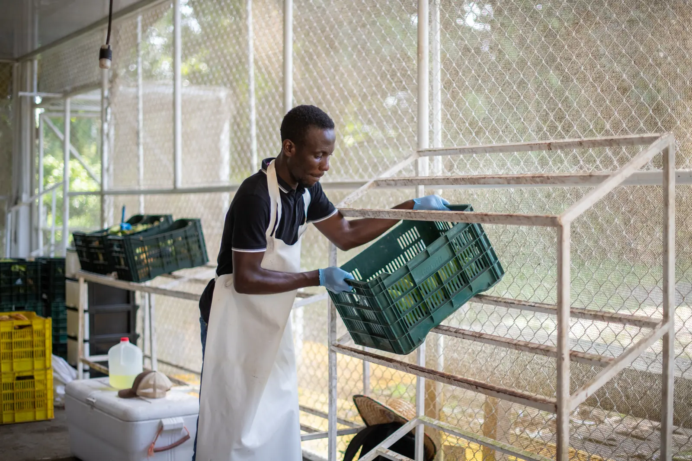
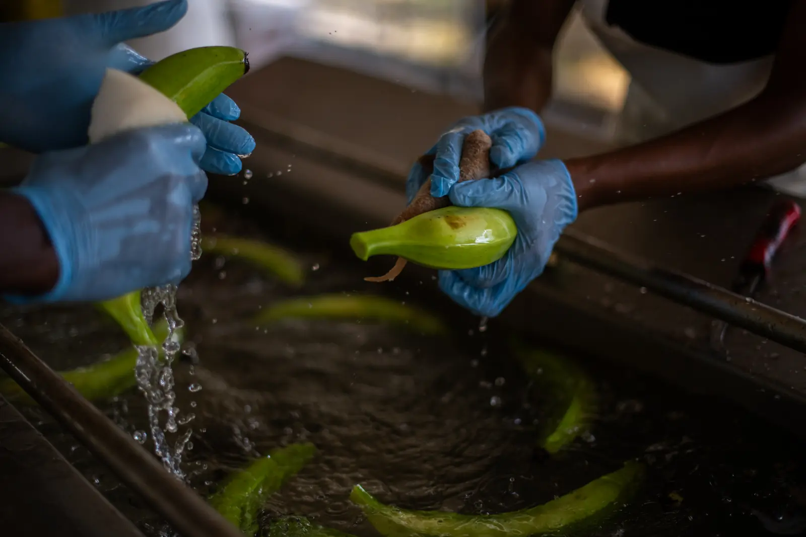

Viabilidad financiera
Los números que sostienen nuestro modelo: producción en campo más valor agregado.
El análisis
Producción + valor agregado, una sola lectura
La viabilidad financiera de Platanera Oro Verde es un factor determinante para evaluar la sostenibilidad y el crecimiento de la empresa. El análisis no solo considera la rentabilidad y el uso eficiente de los recursos: integra la producción en campo de nuestro plátano, base del modelo de negocio.
Sobre esa producción incorporamos un proceso de valor agregado con la elaboración de chips de plátano verde, que nos permite diversificar ingresos, aprovechar el producto de menor calidad comercial y reducir pérdidas postcosecha. Al relacionar los indicadores financieros con la producción agrícola y el procesamiento de chips obtenemos una visión integral del desempeño económico y del potencial de expansión agroindustrial.
¡Con confianza al éxito!

Indicadores
Resultados de la operación
₡4 438,73utilidad por hora gerencial
₡2 181,06utilidad por cada ₡1 000 financiados
₡2,18de retorno por cada colón invertido
+510cajas vendidas
+17 865unidades vendidas
7 000m² de área productiva
14colaboradores activos
¿Interesado en trabajar con nosotros?
Escríbenos y conversemos sobre pedidos, alianzas o el detalle de nuestros indicadores.
Contactar